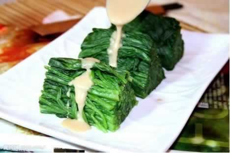
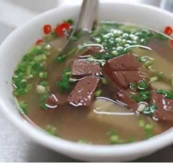

叶酸是孕早期最重要的营养素
叶酸可谓是准妈妈孕早期的主打营养素，对早期胚胎的细胞分裂生长及核酸、氨基酸、蛋白质的合成起着重要的作用，是胎儿生长发育不可缺少的营养素。准妈妈补充叶酸，可预防胎儿神经管发育缺陷，母体缺乏叶酸会导致准妈妈的贫血症状。所以，孕早期补充叶酸非常重要。
生活中有许多深绿叶蔬菜如苋菜、菠菜、油菜等都富含叶酸，动物的肝脏（鸡肝、猪肝、牛肝等）与谷类食物（全麦面粉，大麦、米糠、小麦胚芽、糙米等）、豆类、坚果类食品（黄豆、绿豆、花生、核桃、腰果等）以及新鲜水果（枣、柑橘、橙子、草莓等）中也都含有一定的叶酸。
本周推荐尝试食谱1：
麻将菠菜

推荐理由：麻酱菠菜是一道富含叶酸、清爽可口的家常凉菜，方便易做。
食谱原料：
菠菜500克 、芝麻酱20克、盐、酱油、白砂糖、香油各适量 。
制作方法：
1、将菠菜的根、叶去掉，洗净，放入沸水中焯一下，晾凉后挤去水分，切断装入盘中；
2、麻酱中加少许水，慢慢调开，加盐、酱油、白糖，调匀成麻酱汁；
3、将调好的麻酱汁浇在菠菜段上，淋入香油，拌匀即可。
本周推荐尝试食谱2：
菠菜鸭血汤

推荐理由：
鸭血含有较高的蛋白质，有清洁血液的功效，与菠菜互相配搭，可增强其营养与保健效果，还可为孕早期妈妈补充叶酸。
食谱原料：
鸭血100克、豆腐100克、菠菜少许，葱、姜、枸杞适量。
制作方法：
1、先将鸭血、豆腐切成薄片。
2、锅中放少许油，放葱末、姜末炒后，加入鸭血、豆腐翻炒片刻，然后加枸杞和适量清水。
3、待水沸两分钟后，加菠菜和调料即可。